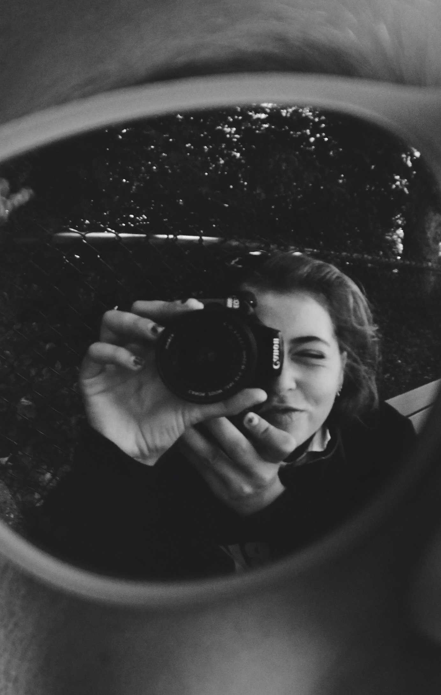

Sobre Mi
De Girona. Fent fotografies des dels dotze anys. M'agrada molt observar, i intento captar allò que em sembla bonic.

He estudiat enginyeria en sistemes audiovisuals i m'ha ajudat a comprendre de forma més tècnica la fotografia. El 2020 vaig estar treballant en un parc d'atraccions com a fotògrafa i el 2023 vaig guanyar el segon premi de fotografia de natura de l'ADAC. Des del 2021 faig les fotografies de l'esdeveniment @voleijam. El meu estil es caracteritza per captar la naturalitat. M'agraden les fotografies amb llum natural i sense massa retocs artificials. Busco un tracte proper i espontani amb els clients. Vols saber-ne més? Contacta'm!